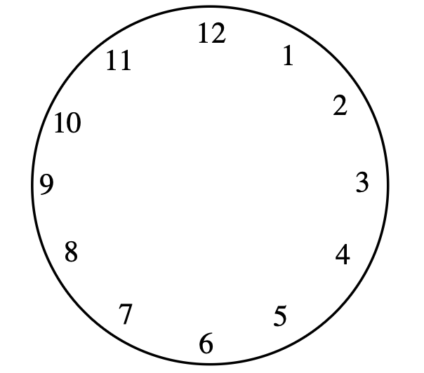
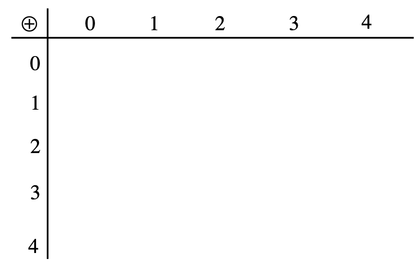

In Section 4.3, we noticed that there were common behaviors among elements of groups. For example, we noticed that the order of an element or subgroup must divide the order of the group. We explored a few groups in Activity 4.3.6 that demonstrated these properties (one group was of order 6 and the other was or order 8). But what if we had another group of order 6? Would it also have the exact same behavior with one element of order 1, three elements of order 2, and two elements of order 3? Could another group of order 6 be commutative where our previous on was not? Or could we have a different configuration of these elements along with different behavior? Also, recall that as we have stated earlier, Poincaré said,
Mathematicians do not study objects, but relations among objects; they are indifferent to the replacement of objects by others as long as relations do not change. Matter is not important, only form interests them. — Henri Poincaré.
Since in a finite group there are only a finite number of combinations of element orders, a natural question is, can we have two different sets and operations act in the same way and will there only be so many groups of a certain order before we start getting groups that repeat the behavior in terms of how the elements interact with each other? After all, Poincaré suggested that we do not care so much about what the sets of objects are, just how that they interact with each other. In this section, we will explore this idea of behavior among different sets to see if we can infer behavior of one set of objects with an operation by looking at a different set of objects with a possibly different operation.
Subsection4.4.1Modular Arithmetic and Groups
In order to explore our question of different groups and whether or not they can behave similarly, let us first look at some examples of groups that can be generated and computed easily. In number theory, we explore the behavior of the integers and, in particular, modular arithmetic. Modular arithmetic is built on the division algorithm as described below.
Theorem4.4.1.The Division Algorithm.
Let \(n\) be any integer and \(d\) be a positive integer (d for divisor), then there exists unique integers \(q\) (quotient) and \(r\) (remainder) such that
\begin{equation*}
n=dq+r \text{, where } 0\leq r \lt d\text{.}
\end{equation*}
While this theorem might look unfamiliar, if you think back to your days of doing long division, your will likely recall continuing to perform the division process until your remainder was less than your divisor. This is what the Division Algorithm is saying (i.e. \(0\leq r \lt d\)).
Modular arithmetic is just a way of reducing all integers to a representative remainder that we get when we divide the integer by a given divisor. Consider the case of telling time. We have two main ways we represent time of day (military time and twelve-hour time). Suppose we are given a time in military time, say 14:00 hours. What would that be in regular twelve-hour time? Figure 4.4.2 gives a twelve-hour clock where we can explore converting from military time to regular time.

Figure4.4.2.Twelve-Hour Clock
Activity4.4.1.
In the military, a 24-hour clock is used to avoid the need for a.m and p.m. distinctions. What we call 2:00 p.m. is referred to as 14:00 hours in the military. In otherwords, \(14 \equiv 2 \pmod {12}\text{,}\) read "14 is congruent to 2 modulo 12". Think of it this way, if you divide 14 by 12, the remainder is 2. Another way to say this with respect to the Division Algorithm is \(14=12 \cdot 1 +2\) where \(n=14\text{,}\)\(d=12\text{,}\)\(q=1\text{,}\) and \(r=2\text{.}\) Anytime you make one lap around the clock, you are getting rid of a multiple of 12 so the place you stop is the same as the remainder. For this reason, modular arithmetic is often referred to as clock arithmetic.
(a)
Start on 12 and count around the clock 53 times. What number do you land on?
(b)
Now take 53 and divide it by 12. What is the remainder?
(c)
What would be the reduced modular equivalent for \(53\pmod {12}\text{?}\) This would be a number from 0 to 11 so that 53 has the same remainder when divided by 12.
Since \(14+7=21\) and \(2+7=9\text{,}\) is it true that \(21 \equiv 9 \pmod{12}\text{?}\) Explain.
Sometimes it is more convenient to express sums for a certain size clock with just the numerals using a modified operation symbol. For example, \(7 \oplus 8=3\) for a 12-hour clock.
(e)
Since \(14 \equiv 2 \pmod {12}\text{,}\) is it true that \(14 \cdot 5 \equiv 2 \cdot 5 \pmod {12}\text{?}\) Discuss with others in your group whether or not you think this will always work. Justify your position here.
This product could also be expressed as \(14 \otimes 5 =10\text{.}\)
Now let us consider a smaller divisor or clock. If we divide by 5, the possible remainders will be 0, 1, 2, 3, or 4. In the previous clock, this would be similar to replacing the 12 with a 0 since if a number is a multiple of 12 then when it is divided by 12 the remainder will be 0. We can see the "mod 5" clock in Figure 4.4.3. In this clock, it can be seen that \(5 \equiv 0 \pmod 5\text{.}\)
Figure4.4.3.Mod 5 Clock
(f)
Reduce \(47 \pmod 5\) to a congruent number of 0, 1, 2, 3, or 4.
(g)
Construct an addition table for (mod 5) below.

(h)
Construct a multiplication table for (mod 5) below.
(i)
Use your multiplication table from part (h) to determine what \(3^4\) would be (mod 5).
(j)
What would be the remainder if \(3^{100}\) were divided by 5? [Hint: Consider your answer to part (i)]
(k)
We often denote the set of integers (mod n) by \(\mathbb{Z}_n\text{.}\) What is the identity of \(\left(\mathbb{Z}_5 , \oplus\right)\text{?}\) What is the identity of \(\left(\mathbb{Z}_5 , \otimes\right)\text{?}\) Explain.
(l)
Does \(\left(\mathbb{Z}_5 , \oplus\right)\) form a group? Explain.
(m)
Does \(\left(\mathbb{Z}_5 , \otimes\right)\) form a group? Explain.